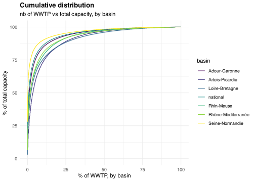

knitr::opts_chunk$set(warning=F, message=F, results=F, dev='svg')library(tidyverse) #loads multiple packages (see https://tidyverse.tidyverse.org/)#core tidyverse packages loaded:# ggplot2, for data visualisation. https://ggplot2.tidyverse.org/# dplyr, for data manipulation. https://dplyr.tidyverse.org/# tidyr, for data tidying. https://tidyr.tidyverse.org/# readr, for data import. https://readr.tidyverse.org/# purrr, for functional programming. https://purrr.tidyverse.org/# tibble, for tibbles, a modern re-imagining of data frames. https://tibble.tidyverse.org/# stringr, for strings. https://stringr.tidyverse.org/# forcats, for factors. https://forcats.tidyverse.org/# lubridate, for date/times. https://lubridate.tidyverse.org/#also loads the following packages (less frequently used):# Working with specific types of vectors:# hms, for times. https://hms.tidyverse.org/# Importing other types of data:# feather, for sharing with Python and other languages. https://github.com/wesm/feather# haven, for SPSS, SAS and Stata files. https://haven.tidyverse.org/# httr, for web apis. https://httr.r-lib.org/# jsonlite for JSON. https://arxiv.org/abs/1403.2805# readxl, for .xls and .xlsx files. https://readxl.tidyverse.org/# rvest, for web scraping. https://rvest.tidyverse.org/# xml2, for XML. https://xml2.r-lib.org/# Modelling# modelr, for modelling within a pipeline. https://modelr.tidyverse.org/# broom, for turning models into tidy data. https://broom.tidymodels.org/# Use the conflicted package (<http://conflicted.r-lib.org/>) to force all conflicts to become errors#loading relevant packages# library(tidyr)# library(tidyverse) #mainly for reading files functions# library(dplyr)# library(ggplot2) #for ggplot graphslibrary(cowplot) #for plot_grid()# library(stringr) #to manipulate strings# library(ggpattern) #to have patterns area with geom_area_pattern# library(viridis)# library(readxl) #to read excel file#setting graphs themetheme_set(theme_minimal() +theme(plot.title =element_text(face="bold") ) )#setting viridis theme for colorsscale_colour_continuous <- scale_colour_viridis_cscale_colour_discrete <- scale_colour_viridis_dscale_colour_binned <- scale_colour_viridis_b#setting viridis theme for fillscale_fill_continuous <- scale_fill_viridis_cscale_fill_discrete <- scale_fill_viridis_dscale_fill_binned <- scale_fill_viridis_bSource <-"Sources: Water Agencies\nComputation Thomas Starck"#WOULD BE BETTER IF SIAAP WERE THE SAME COLOR AS SEINE-NORMANDIE BASIN# Load the function filesource("functions.R")
Load basins files
We create a file combining the different basins flows and ratios, for metropolitan France and for each basin. Since the Seine-Normandie basin data is only available for 2015, we also load the SIAAP data, containing 5 of the largest WWTP of Seine-Normandie, over a longer time period.
We do not analyse the very small WWTP (0 to 200 PE) which are very noisy and unreliable. Furthermore, they represent only a few percent of total flows.
Code
f_graph_ratio_basin_PE <-function(dataset, nutrient_ratio, ratio_label, y_min, y_max){ g <-ggplot(dataset %>%filter(PE_bin !="unreported PE")) +#basins and the modified legendgeom_line(aes(Year, !!as.symbol(nutrient_ratio), color=basin)) +guides(color =guide_legend(override.aes =list(linetype =c(1, 1, 1, 1, 1, 0),shape =c(NA, NA, NA, NA, NA, 19) ) ) ) +#SIAAP and its dotted linegeom_line(data = file_basin_PE_SIAAP, aes(Year, !!as.symbol(nutrient_ratio), linetype="SIAAP") ) +scale_linetype_manual(values=c("dotted")) +# Seine-Normandie 2015 pointgeom_point(data = dataset %>%filter(basin=="Seine-Normandie"), aes(Year, !!as.symbol(nutrient_ratio), color =factor(basin)) ) +labs(x="", y="", color="",title =paste(ratio_label, "ratio at the basins scale"),subtitle ="in the different French basins for each capacity category",caption = Source, linetype ="" ) +facet_wrap(vars(PE_bin)) +ylim(y_min, y_max)return(g)}
We do not analyse the very small WWTP (0 to 200 PE) which are very noisy and unreliable. Furthermore, they represent only a few percent of total flows.
Code
f_graph_yield_basin_PE <-function(dataset, nutrient_yield, yield_label){ g <-ggplot(dataset %>%filter(PE_bin !="unreported PE")) +#basins and adapted legendgeom_line(aes(Year, !!as.symbol(nutrient_yield), color=basin)) +guides(color =guide_legend(override.aes =list(linetype =c(1, 1, 1, 1, 1, 0),shape =c(NA, NA, NA, NA, NA, 19) ) ) ) +#SIAAP and its dotter linegeom_line(data = file_basin_PE_SIAAP, aes(Year, !!as.symbol(nutrient_yield), linetype="SIAAP") ) +scale_linetype_manual(values=c("dotted")) +#Seine-Normandie basin in 2015geom_point(data = dataset %>%filter(basin=="Seine-Normandie"), aes(Year, !!as.symbol(nutrient_yield), color = basin) ) +ylim(0, 100) +labs(x="", y="yield (%)", color="",title =paste(yield_label, "wastewater treatment plant yield at the basins scale"),subtitle ="in the different French basins",caption = Source,linetype ="" ) +facet_wrap(vars(PE_bin)) return(g)}
We do not analyse the very small WWTP (0 to 200 PE) which are very noisy and unreliable. Furthermore, they represent only a few percent of total flows.
Code
f_graph_capacity_basin_PE <-function(dataset, nutrient_ratio, ratio_label, y_min, y_max){ g <-ggplot(dataset %>%filter(PE_bin !="unreported PE")) +#basins and adapted legendgeom_line(aes(Year, !!as.symbol(nutrient_ratio), color=basin)) +guides(color =guide_legend(override.aes =list(linetype =c(1, 1, 1, 1, 1, 0),shape =c(NA, NA, NA, NA, NA, 19) ) ) ) +#seine normandie point in 2015geom_point(data = dataset %>%filter(basin=="Seine-Normandie"), aes(Year, !!as.symbol(nutrient_ratio), color =factor(basin)) ) +#SIAAP dotted linegeom_line(data = file_basin_PE_SIAAP, aes(Year, !!as.symbol(nutrient_ratio), linetype="SIAAP") ) +scale_linetype_manual(values=c("dotted")) +labs(x="", y=expression(paste("g.PE"^"-1", ".day"^"-1")), color="",title =paste(ratio_label, "per nominal PE in the different French basins"),subtitle ="in the different French basins for each capacity category",caption = Source,linetype ="" ) +facet_wrap(vars(PE_bin)) +scale_y_continuous(limits =c(y_min, y_max),sec.axis =sec_axis(trans=~.*(365/1000), name=expression(paste("kg.PE"^"-1", ".year"^"-1")) ) )return(g)}
path_source <-"output_data/zipf_law"Source <-"Source: Water Agencies\nComputation by Thomas Starck"file_zipf_law <-list.files( #read and merge csv of all yearspath = path_source,pattern ="zipf_law*", full.names = T, recursive = T ) %>%lapply(read_csv) %>% bind_rows
ggplot(file_zipf_law) +geom_step(aes(percent_rank, percent_cumulative_capacity, color = basin) ) +labs(x="% of WWTP, by basin", y="% of total capacity",title ="Cumulative distribution",subtitle ="nb of WWTP vs total capacity, by basin" ) +ylim(0, 100)

Code
ggplot(file_zipf_law) +geom_step(aes(percent_rank, percent_cumulative_capacity, color = basin) ) +scale_x_log10(labels = scales::label_number(drop0trailing =TRUE)) +scale_y_log10(labels = scales::label_number(drop0trailing =TRUE)) +labs(x="% of WWTP, by basin", y="% of total capacity",title ="Cumulative distribution",subtitle ="nb of WWTP vs total capacity, by basin" ) +ylim(0, 100)
Code
ggplot(file_zipf_law) +geom_point(aes(rank_STEU, capacity, color = basin) ) +geom_line(aes(rank_STEU, capacity, color = basin) ) +scale_x_log10(labels = scales::label_number(drop0trailing =TRUE)) +scale_y_log10(labels = scales::label_number(drop0trailing =TRUE)) +labs(x="rank of WWTP capacity, by basin", y="WWTP nominal capacity\n(population equivalent)",title ="Looking for a Zipf Law",subtitle ="as an indication, shaded area represent the -1 power law" ) +geom_function(fun =~ (2*10^6)*.x^-(1), linewidth=9, alpha=.4)
Save final data
We save the adjusted nutrient flows for each basin, averaged over the 2015-2020 period.